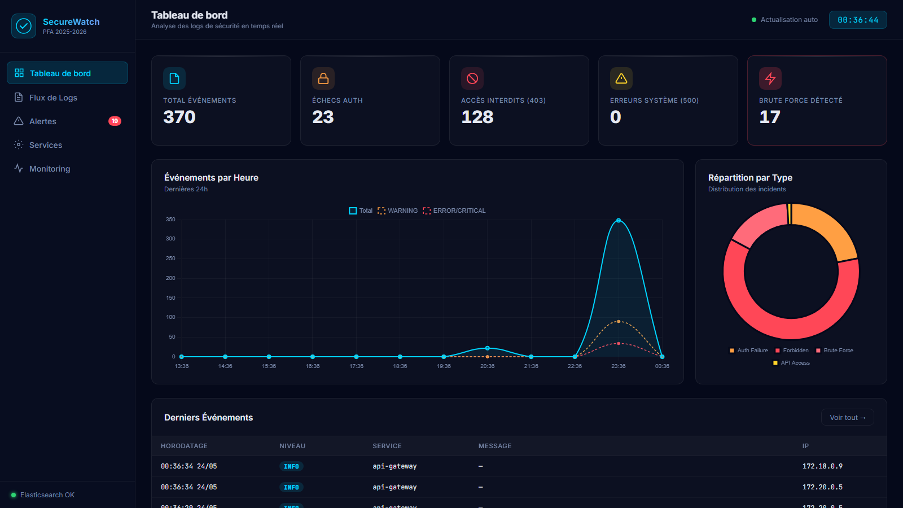
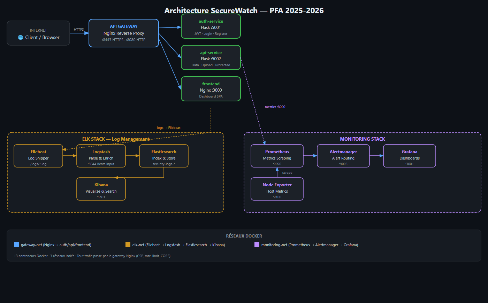
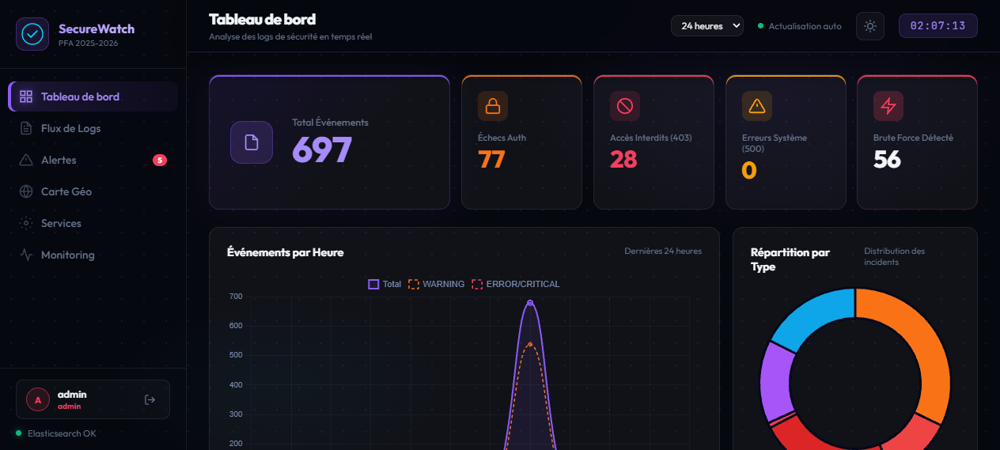
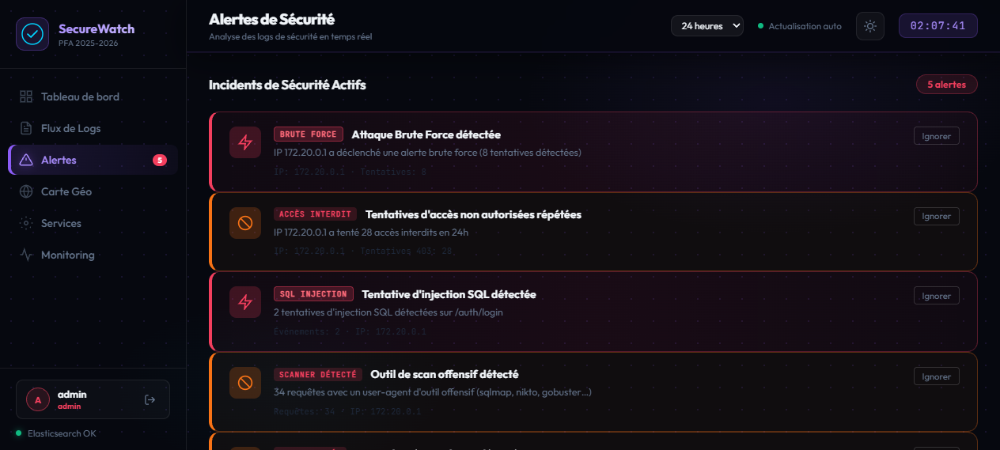
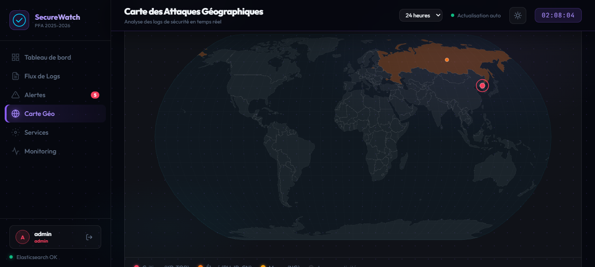

1
AGRAD Hicham
Pr. _________________ (Encadrant)
Pr. _________________
SecureWatch est une plateforme de surveillance de sécurité en temps réel, développée dans le cadre du PFA 2025-2026. Elle centralise la collecte des logs, détecte automatiquement les incidents de sécurité et génère des alertes en temps réel dans une architecture microservices conteneurisée.

Brute Force
≥5 tentatives de connexion échouées depuis la même IP → détection CRITIQUE
Injection SQL
Regex sur les champs de login, blocage 400 + log SQL_INJECTION
Scanners Offensifs
Détection via User-Agent (sqlmap, Nikto, Nessus, masscan, gobuster…)
Anomalie Géographique
Requêtes depuis IP de pays à risque (RU, CN, KP, IR, TOR, NG)
Accès Non Autorisés
Réponses 401/403 agrégées et détectées par Logstash
Dépassement de Débit
Rate limiting Nginx (5r/m auth, 30r/m API, 100r/m global) → 429
Centraliser les logs
via ELK Stack (Elasticsearch + Logstash + Kibana + Filebeat)
Détecter les attaques
en temps réel — 9 types d'incidents, 10 event_types Logstash
Alerter automatiquement
via Prometheus + Alertmanager, 11 règles d'alerte configurées
Visualiser les données
Dashboard SPA + Grafana + Kibana, carte géo D3.js
Sécuriser les accès
JWT HS256, TLS/HTTPS, rate limiting, RBAC 3 rôles
Simuler les attaques
9 scénarios automatisés (brute force, SQLi, scanner, géo…)

sanitize_input()9 types d'attaques
détectées et alertées
en temps réel
Dashboard de monitoring
complet (SPA + Grafana
+ Kibana + Géo Map)
11 règles d'alerte
Prometheus avec
Redis persistant

Dashboard principal — vue générale

Gestion des alertes en temps réel

Carte géographique des attaques
PFA enrichissant : conception et déploiement d'une plateforme SOC complète de A à Z
Compétences renforcées : ELK Stack, Docker, Python/Flask, Prometheus, sécurité réseau
Architecture solide : 14 conteneurs, microservices, TLS, JWT, RBAC, Redis
Livrable complet : dashboard fonctionnel, alertes automatiques, 9 simulations d'attaque
Intégrer la détection d'anomalies par Machine Learning (modèles d'IA pour scoring des menaces)
Déploiement en cloud public (AWS/Azure) avec haute disponibilité et auto-scaling
Connexion à un SIEM externe (Splunk, QRadar) pour corrélation d'événements multi-sources
Développement d'une application mobile de monitoring avec notifications push d'alertes